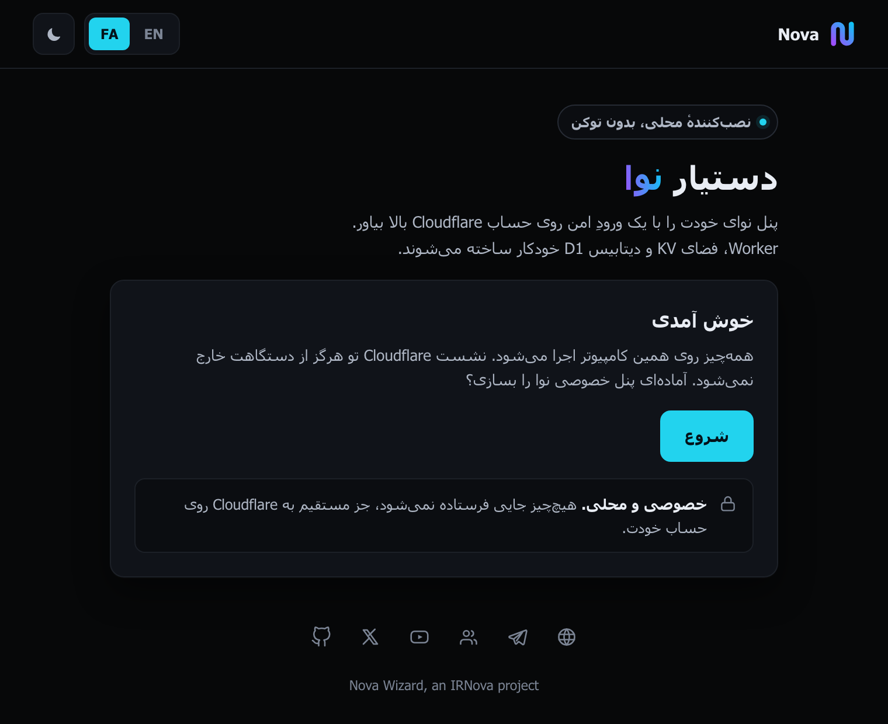

یک پنل نوا، بدون تلگرام
دستیار نوا روی کامپیوتر خودتان اجرا میشود. یک صفحه در مرورگرتان باز میکند، شما یکبار وارد حساب Cloudflare میشوید، و پنل نوا پروکسی روی حساب Cloudflare خودتان ساخته میشود. شما توکن API نمیسازید و ورود شما به Cloudflare هرگز از سرورهای ما رد نمیشود.
اول مسیرتان را انتخاب کنید
دو ابزار این کار را برایتان انجام میدهند. یکی از آن دو خیلی کمدردسرتر است و این صفحه آن یکی نیست.
ربات تلگرام
یک گفتگو با یک ربات. نه چیزی نصب میکنید و نه ترمینالی باز میکنید. بیشتر آدمها باید همین را انتخاب کنند.
باز کردن ربات در تلگرامدستیار نوا
برای کسانی که سراغ تلگرام نمیروند. یک برنامهٔ کوچک را روی دستگاه خودتان اجرا میکنید و ورود به Cloudflare را خودتان انجام میدهید.
همین صفحه دربارهٔ این مسیر است.وقتی اجرایش میکنید چه اتفاقی میافتد
خود دستیار روی صفحه شش مرحله میشمارد. پشت آن شش مرحله این کارها انجام میشود.
-
اجرایش میکنید
یک دستور در ترمینال، یا روی Windows یک دابلکلیک. پنجرهٔ ترمینال تا آخر کار باز میماند و بستن آن دستیار را متوقف میکند.
-
یک صفحهٔ محلی باز میشود
دستیار یک صفحه روی
127.0.0.1بالا میآورد و مرورگر را روی همان باز میکند. آن آدرس یک توکن دارد که هر بار تازه است و فقط روی دستگاه خودتان کار میکند. -
وارد Cloudflare میشوید
Cloudflare در یک تب دوم باز میشود و اجازهٔ دسترسی میخواهد. اجازه بدهید، آن تب را ببندید و به صفحهٔ دستیار برگردید.
-
اسمها را انتخاب میکنید
انتخاب میکنید روی کدام حساب Cloudflare نصب شود. دستیار برای Worker، فضای KV و دیتابیس D1 اسمهای تصادفی میگذارد. عوضشان کنید یا همانطور بگذارید.
-
نصب میکند
دستیار نسخهٔ محافظتشدهٔ نوا پروکسی را دانلود میکند، روی حساب شما آپلود میکند، فضای KV و دیتابیس D1 را میسازد و به Worker وصل میکند، و در آخر آدرس پنل را نشان میدهد.

پیش از شروع
- یک حساب Cloudflare
- حساب رایگان کافی است. در مرحلهٔ ۳ وارد میشوید. دستیار هیچوقت از شما نمیخواهد توکن یا کلید API بسازید.
- Python 3.8 یا جدیدتر
- روی macOS و بیشتر توزیعهای Linux از قبل نصب است. با
python3 --versionچکش کنید. روی Windows میتوانید Python را رد کنید و از برنامهٔ آمادهٔ پایین استفاده کنید. - یک ترمینال
- یک پنجره و سه دستور. اگر خواندن همین جمله معذبتان کرد، ربات تلگرام ابزار بهتری برای شماست.
- اینترنتی که به Cloudflare برسد
- دستیار با Cloudflare و GitHub کار دارد. اگر هر کدام برایتان باز نشد، قبل از شروع همان VPN همیشگیتان را روشن کنید.
چه چیزی از دستگاهتان بیرون میرود. ورود Cloudflare و توکن دسترسیای که میسازد روی کامپیوتر خودتان میماند، و دستیار وقتی بسته میشود همان توکن را به Cloudflare پس میدهد.
یک چیز بیرون میرود. بعد از یک نصب موفق، دستیار یک خط به شمارندهٔ novaproxy.online میفرستد: یک هش از آدرس پنل، تا یک پنل بین ربات و وبسایت و این ابزار فقط یکبار شمرده شود. خود آدرس پنل فرستاده نمیشود.
اجرا
یک دستور. یک فایل دانلود میکند و اجرایش میکند. نه مخزنی برای کلون کردن لازم است و نه git.
macOS، Linux، یا Windows با Python
curl -fsSL https://novaproxy.online/wizard.py -o nova_wizard.py && python3 nova_wizard.pyبعد ترمینال چیزی شبیه این چاپ میکند:
====================================================== Nova OAuth Wizard Cloudflare Worker + KV + D1 Deployer ====================================================== URL: http://127.0.0.1:8000/?token=Lkp3yEnpM8fNMPon... JS: /home/you/Nova-Wizard/worker.js [!] worker.js not found! 1. Open browser 2. Click 'Login with Cloudflare' 3. Authorize on Cloudflare 4. Enter names + Deploy
مرورگر باید خودش روی همان آدرس باز شود. اگر باز نشد، کل آن خط را با توکنش در نوار آدرس مرورگر بچسبانید. خط worker.js not found در اجرای اول طبیعی است: دستیار پنل را بعداً، وقتی دکمهٔ Deploy را میزنید، دانلود میکند.
Windows بدون Python
یک برنامهٔ آماده هم هست، حدود ۸.۴ مگابایت، ۶۴ بیتی و قابل حمل. دانلودش کنید، دابلکلیک کنید، همان صفحهٔ محلی باز میشود.
خودتان آن برنامه را بسازید
از BUILD.md. این بخش Windows و Python 3.14 یا جدیدتر میخواهد، و موقع ساخت باید پوشهٔ static کنار nova_wizard.py باشد.
pip install pyinstaller Pillow
pyinstaller --onefile --name NovaWizard --add-data "static;static" --icon app.ico nova_wizard.pyبرنامهٔ نهایی در dist/NovaWizard.exe ساخته میشود.
چه چیزی روی حساب Cloudflare شما ساخته میشود
- یک Worker که پنل نوا پروکسی را اجرا میکند، روی یک آدرس workers.dev.
- یک فضای KV که ساخته و به همان Worker وصل میشود.
- یک دیتابیس D1 که ساخته و به همان Worker وصل میشود.
هر سه اسم بهطور پیشفرض تصادفیاند و هر سه را میشود پیش از زدن Deploy عوض کرد. به چیز دیگری روی حسابتان دست نمیزند.
وقتی کار تمام شد، دستیار آدرس پنل و مشخصات اولین ورود را نشان میدهد. پنل را باز کنید و همان اول رمز عبور دلخواه خودتان را تنظیم کنید.
دستیار نوا، پروژهای از IRNova.